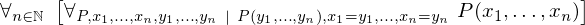
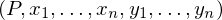

In [1]:
import proveit
# Automation is not needed when only building an expression:
proveit.defaults.automation = False # This will speed things up.
proveit.defaults.inline_pngs = False # Makes files smaller.
# import the special expression
from proveit.logic.equality._theorems_ import mult_sub_left_into
In [2]:
# check that the built expression is the same as the stored expression
%check_expr mult_sub_left_into
In [3]:
# Show the LaTeX representation of the expression for convenience if you need it.
print(mult_sub_left_into.latex())
In [4]:
# display the expression information
mult_sub_left_into.exprInfo()
Out[4]:
| core type | sub-expressions | expression | |
|---|---|---|---|
| 0 | Operation | operator: 5 operand: 1 |  |
| 1 | Lambda | parameter: 29 body: 2 |  |
| 2 | Conditional | value: 3 condition: 4 |  |
| 3 | Operation | operator: 5 operand: 6 |  |
| 4 | Operation | operator: 7 operands: 8 |  |
| 5 | Literal |  | |
| 6 | Lambda | parameters: 9 body: 10 |  |
| 7 | Literal |  | |
| 8 | ExprTuple | 29, 11 |  |
| 9 | ExprTuple | 21, 17, 25 |  |
| 10 | Conditional | value: 12 condition: 13 |  |
| 11 | Literal |  | |
| 12 | Operation | operator: 21 operands: 14 |  |
| 13 | Operation | operator: 15 operands: 16 |  |
| 14 | ExprTuple | 17 |  |
| 15 | Literal |  | |
| 16 | ExprTuple | 18, 19 |  |
| 17 | ExprRange | lambda_map: 20 start_index: 28 end_index: 29 |  |
| 18 | Operation | operator: 21 operands: 22 |  |
| 19 | ExprRange | lambda_map: 23 start_index: 28 end_index: 29 |  |
| 20 | Lambda | parameter: 35 body: 24 |  |
| 21 | Variable |  | |
| 22 | ExprTuple | 25 |  |
| 23 | Lambda | parameter: 38 body: 26 |  |
| 24 | IndexedVar | variable: 36 index: 35 |  |
| 25 | ExprRange | lambda_map: 27 start_index: 28 end_index: 29 |  |
| 26 | Operation | operator: 30 operands: 31 |  |
| 27 | Lambda | parameter: 35 body: 32 |  |
| 28 | Literal |  | |
| 29 | Variable |  | |
| 30 | Literal |  | |
| 31 | ExprTuple | 33, 34 |  |
| 32 | IndexedVar | variable: 37 index: 35 |  |
| 33 | IndexedVar | variable: 36 index: 38 |  |
| 34 | IndexedVar | variable: 37 index: 38 |  |
| 35 | Variable |  | |
| 36 | Variable |  | |
| 37 | Variable |  | |
| 38 | Variable |  |